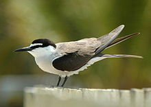
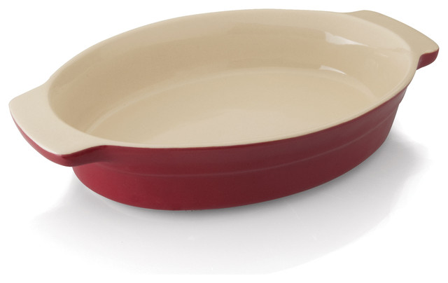

Thursday, December the 18th, 2014
back to: title, date or indexes
In his comment on Christmas Dinner, Hooting Yard's in-house anagrammatist R. provided one of his finest letter-jumbles : crams tern in dish. This is, quite clearly, the essential Yuletide recipe for my readers, and I thus present a handy pictorial guide:
Ingredients : tern

Equipment : dish

Method : cram tern in dish. Serve.